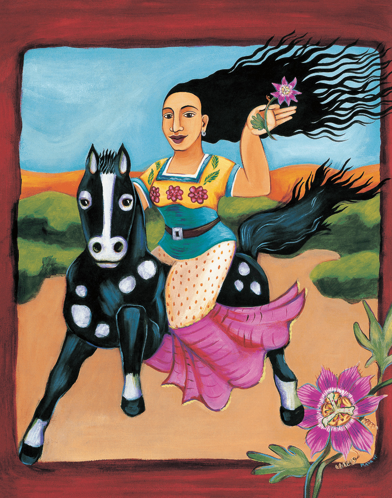

12

12
13
MY GREAT-
GRANDMOTHER
Refugio Morales
written by Maya Christina Gonzalez
My great-grandmother Refugio may have been a curandera—a traditional healer who made her own medicines from plants and herbs. I met her only once, when I was very young. I don’t know much about her life, but she has always inspired me. This is the way I imagine her telling her story:
I am Refugio. I was born in 1898 in the heart of Mexico. People call me the “Galloping Curandera” because I ride through the desert on my horse to do my healing work. When someone is sick, I don’t listen to their words as much as I listen to their hearts and their bodies. Then I gallop into the desert to find the perfect plant to help them get better.
In the desert, I listen to the voices of the plants. They call out my name and tell me their healing stories. That is how I learned to be a curandera—by listening to things you think have no voice. This is my joy, so this is my work.